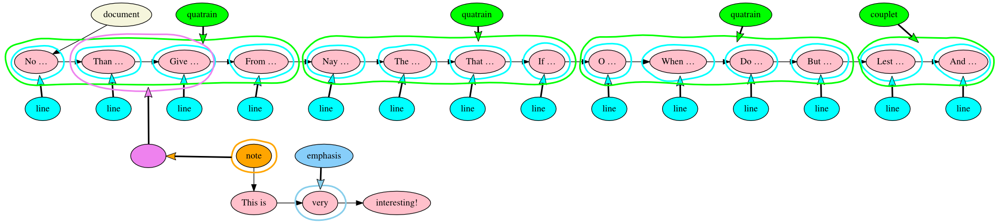

Text is multidimensional

Ronald Haentjens Dekker and David J. Birnbaum
Balisage: The Markup Conference, August 2017
More to come...
Percy Bysshe Shelley, “Ozymandias”
Who said — “Two vast and trunkless legs of stone
Stand in the desart.... Near them, on the sand
<line>
<phrase>Who said —</phrase>
<phrase>“Two vast and trunkless legs of stone
</line>
<line>
Stand in the desart….</phrase>
<phrase>Near them,</phrase>
<phrase>on the sand</phrase>
</line>
Lewis Carroll, Alice in Wonderland
Alice was beginning to get very tired of sitting by her sister on the bank, and of having nothing to do: once or twice she had peeped into the book her sister was reading, but it had no pictures or conversations in it, “and what is the use of a book,” thought Alice “without pictures or conversation?”
<p>Alice was beginning to get very tired of sitting by her sister
on the bank, and of having nothing to do: once or twice she had
peeped into the book her sister was reading, but it had no pictures
or conversations in it, <q>and what is the use of a book,</q>
thought Alice <q>without pictures or conversation?</q></p>TAG is a directed hypergraph model
Operations in TAG are operations on sets of nodes and edges
Percy Bysshe Shelley, “Ozymandias”
Who said — “Two vast and trunkless legs of stone
Stand in the desart.... Near them, on the sand

Lewis Carroll, Alice in Wonderland
Alice was beginning to get very tired of sitting by her sister on the bank, and of having nothing to do: once or twice she had peeped into the book her sister was reading, but it had no pictures or conversations in it, “and what is the use of a book,” thought Alice “without pictures or conversation?”

William Shakespeare, Sonnet #71
<line>
<foot>No l<stress>o</stress>n</foot><foot>ger m<stress>ou</stress>rn</foot>
<foot>for m<stress>e</stress></foot>
<foot>when <stress>I</stress></foot>
<foot>am d<stress>ea</stress>d</foot>
</line>The following pseudo-XML is not well formed:
<line>
<foot><word>No</word> <word>l<stress>o</stress>n</foot><foot>ger</word>
<word>m<stress>ou</stress>rn</word></foot>
<foot><word>for</word> <word>m<stress>e</stress></word></foot>
<foot><word>when</word> <word><stress>I</stress></word></foot>
<foot><word>am</word> <word>d<stress>ea</stress>d</word></foot>
</line> ____
____
<title><name>Romeo</name> and <name>Juliet</name></title>Textual content in TAG is expressed by nodes with a type value of “text”, each of which represents a segment of textual content (Text nodes may also be empty). The order of the text is stored as directed regular (one-to-one) edges between pairs of Text nodes; this chain begins at the Document node, which points to the first Text node, and a single, unbroken chain connects all Text nodes in the document except those in annotations.23
<p>Textual content in TAG is expressed by nodes with a type
value of “text”, each of which represents a segment of textual
content (Text nodes may also be empty). The order of the text is
stored as directed regular (one-to-one) edges between pairs of Text
nodes; this chain begins at the Document node, which points to the
first Text node, and a single, unbroken chain connects all Text
nodes in the document except those in annotations.<fn><p>[Haentjens
Dekker and Birnbaum 2017]</p></fn></p>